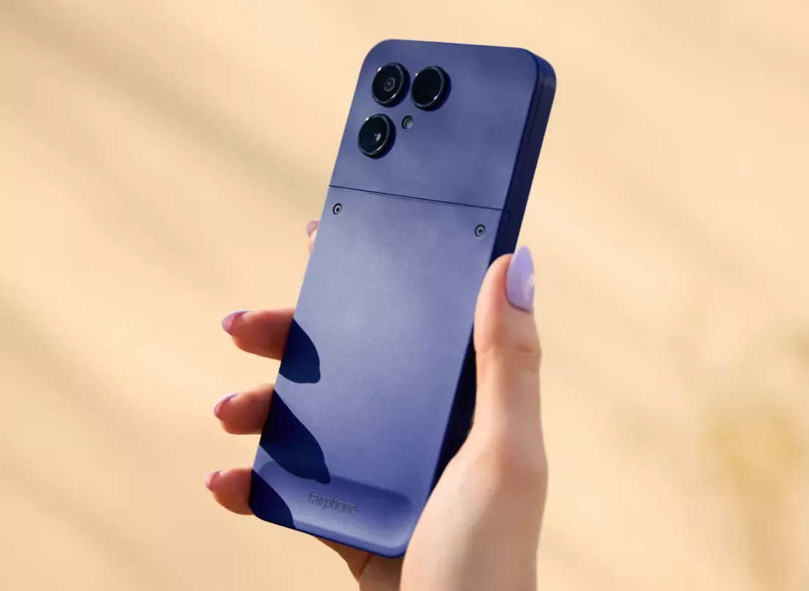
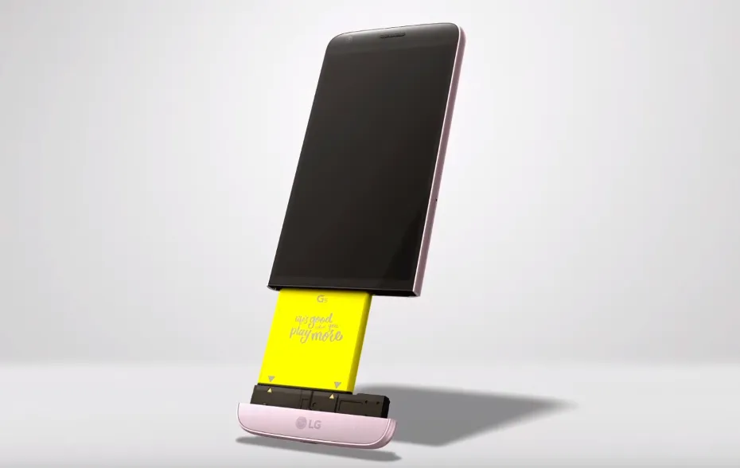

모듈러형 스마트폰 Fairphone Gen. 6+ 미국 출시됨
퀄컴 스냅드래곤 7s Gen 4 SoC를 탑재했으며, 6.3인치 120Hz OLED 디스플레이, 12GB RAM, 256GB임
T5 드라이버 하나만으로 배터리, 디스플레이, 카메라, USB-C 충전 포트 등 최대 12개 부품을 직접 교체할 수있음
교체 부품 가격도 합리적으로, 배터리는 40달러 미만, 새 화면은 89.95달러 수준이라고함

...... 애는 드라이버도 필요없는데?
한줄요약 : 신박하다싶은거는 찾아보면 먼저 시도했던 회사
댓글
수집 당시 최근 댓글 10개
줄건줘 · 2 시간 전
구멍 · 7 시간 전
재밌겠다.. 난 근데 이제 방수방진 없으면 못쓴다 ㅠ
헬조선반도 · 7 시간 전
'혁' '신'
님금임은벗거벌 · 7 시간 전
20년전 폰들이 개성은 오졌지
즐기시게냅둬 · 7 시간 전
부품수리 DIY에 의의가 있을듯 모듈화라고 해봤자 딱히 특별하게 더 할 수 있는건 거의 없는듯
새콤달콤동치미 · 7 시간 전
LG폰 옵티머스 LTE때부터 썼었는데 걍 폰 수명이 2년을 못 넘김. 내가 하드하게 게임을 하는것도 아니고, 하루 30분 남짓하고 자기전에 웹툰 30분 남짓 보고 그 외에는 그냥 일상적인 통화가 전부였는데 그렇게 써도 폰이 2년을 못 넘기고 어느 날 안켜짐. 뷰2까지 쓰다가 걍 그 뒤로 갤럭시로 갈아탔다.
년 째 과일장사 · 7 시간 전
프로젝트 아라 존나 기대했는데
ㅇ益ㅇ · 6 시간 전
저 쓰레기를 제이슨 스타뎀까지 섭외해가며 홍보함 ㅋㅋㅋ
공갈포 · 3 시간 전
엘지 g2 괜찮다고 해서 써봤는데 최적화고 뭐고 간에 업무상 통화할 일이 많았는데 오지도 않은 전화가 부재중도 아니고 매너콜로 자꾸 뜨는거 보고 이러다 큰일나겠다 싶어서 갤럭시s7 엣지로 넘어간 기억난다. 화면 두번터치하면 켜고 꺼지는거 처음 싸봤는데 그거 하나만 편했던 기억이 있네
감자 · 48 분 전
저 모듈폰 떨어트리면 배터리 분리된다는 소리 있었음..